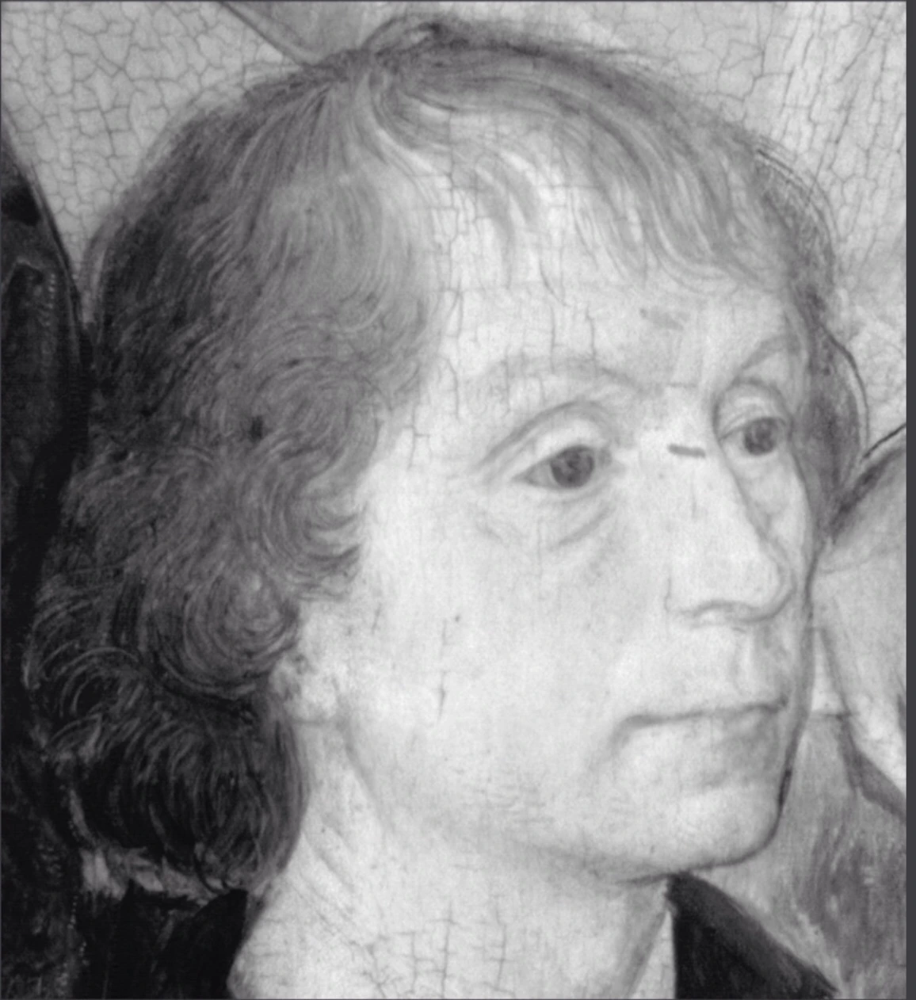
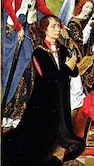
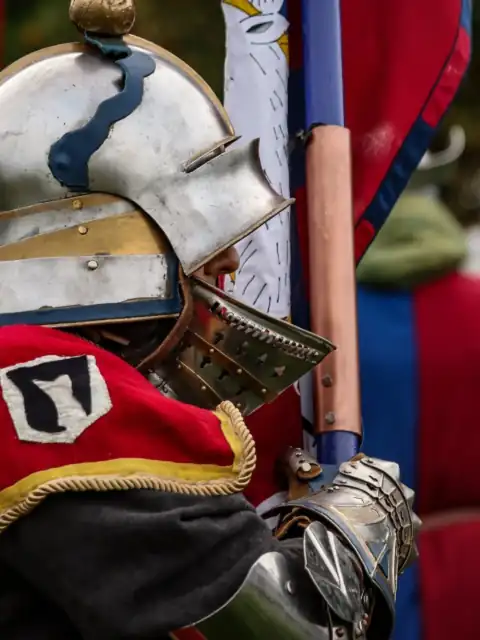
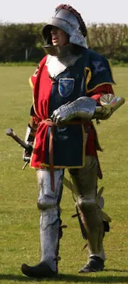

Sir John Donne of Kidwelly
The knight who served four kings, yet remains largely forgotten.
Knight ✦ Diplomat ✦ Servant of Kings
Discover the life and world of Sir John Donne (c.1420–1503) through medieval living history, artefacts, and reenactment events across the UK.
View Upcoming Events
Who was Sir John Donne of Kidwelly?
Sir John Donne (c.1420–1503) was a knight, royal servant, and diplomat whose life spanned the turbulent years of the Wars of the Roses. Born in Picardy to a Welsh family, Great Grandson of Owain Glyndŵr, Donne served the Yorkist cause under Richard, Duke of York and later King Edward IV & Richard III.
Through loyal service he rose to positions of trust including Justice of the Peace, Sheriff, steward, and ambassador. His travels took him across England, Wales, and continental Europe, including diplomatic missions to Burgundy and France.

Living History & Re-enactment
This project brings the world of Sir John Donne to life through historical reenactment, exploring the daily life, equipment, and culture of the fifteenth century.
Visitors can explore a late medieval encampment, see armour and historical artefacts, and learn about the roles of knights, household retainers, and royal servants during the Wars of the Roses.
M. Bass (who portrays Sir John Donne) appears at events across the United Kingdom alongside the re-enactment group Knights of Skirbeck.
